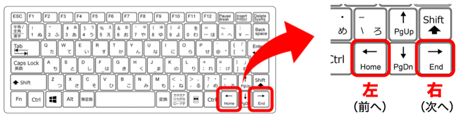
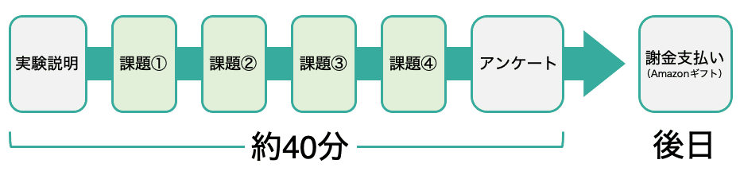
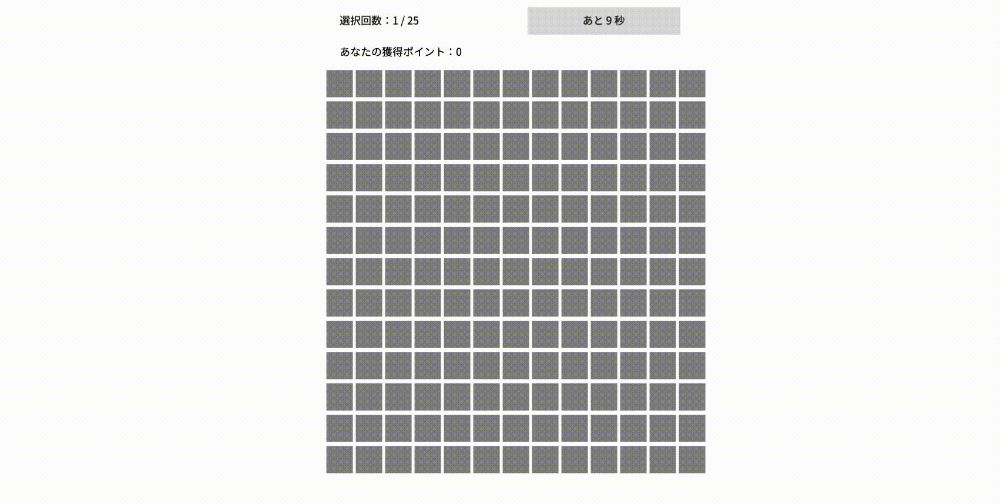
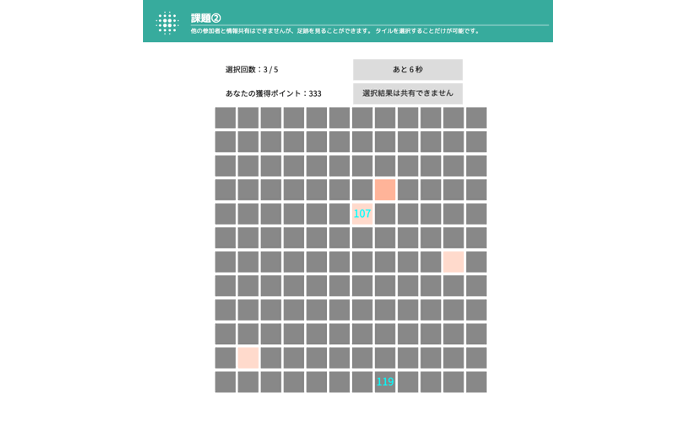

実験の説明をよく読み、十分理解できたら、確認テストに進んでください。
画面が反応しない場合は、スライドの枠内を一度クリックしてから操作してください。
-
Go to next slide
実験説明の進め方
1 / 9
- 右矢印キーを押して、説明スライドの次のページに進んでください。
- 左矢印キーを押すと、前のページに戻ることができます。

-
Go to previous slide
Go to next slide
注意事項
2 / 9
- この実験には、あなた以外に複数の参加者が同時進行で取り組んでいます。
- 実験中に他の作業をしないでください。動画の視聴や、ゲーム・WEB閲覧をすると、適切な実験の進行が妨げになったり、通信が途中で切れて実験が途中終了したりする可能性があります。
- 指示された操作は迅速に行ってください。他の参加者を待たせることになるため、一定時間が経過しても操作を完了しない場合、あなたが実験スロットから除外されて実験が途中終了することがあります。
- 上記の理由で途中終了した実験には、謝礼をお支払いできませんので、ご了承ください。
-
Go to previous slide
Go to next slide
実験の流れ
3 / 9
- この実験説明の後、課題①から課題④までの4つの実験課題を行います。
- その後、アンケートにご回答いただき、本日の実験内容は終了になります。
- 実験は、全部で約40分を予定しています。
- 実験の謝金は、アンケートにご入力いただいたメールアドレスに、Amazonギフトカードをお送りします（後日）。

-
Go to previous slide
Go to next slide
課題について
4 / 9
- この実験で行っていただくのは、144枚のタイルの中から1枚選ぶという意思決定を何度も繰り返す課題です。
- 選択のたびに、選んだタイルに割り当てられた報酬ポイントを獲得できます。

-
Go to previous slide
Go to next slide
報酬ポイント
5 / 9
- 灰色の部分をクリックすることで、そのタイルが選択されます。選択は、各課題につき25回行います。
- 1回の選択につき、10秒の制限時間があります。時間切れになると、その回の獲得ポイントは0となってしまいます。
- 同じタイルを繰り返し選んでも構いません。ポイントはその選択のたびに累積されていきます。
- 課題①〜課題④のうち、いずれか1つの課題の累計獲得ポイントが、お金に換算され、実験後の追加謝金として実際に支払われます。したがって、高い報酬を獲得し続けるほど、結果として高額の謝金を受け取ることができます。
-
Go to previous slide
Go to next slide
他の参加者の足跡
6 / 9
- 直前の選択で、グループのメンバーが選んだタイルは、赤い色でハイライトされます。
- 同じタイルを選択した人が複数いる場合には、その人数に応じてハイライトの赤色が濃く表示されます。

-
Go to previous slide
Go to next slide
他の参加者への情報共有（一部の課題）
7 / 9
- 選択したタイルについての情報を、他の参加者と共有することができます。
- タイルを選択したあと、制限時間以内に実験画面右上の「選択結果を共有」ボタンをクリックすると、同時に参加しているすべての参加者に、そのタイルの報酬ポイントが公開されます。
-
Go to previous slide
Go to next slide
他の参加者から共有される情報（一部の課題）
8 / 9
- 他の参加者が選択情報を共有した場合にも同様に、あなたを含む全員にその回に選択したタイルの情報が公開されます。もちろん、他の参加者から情報共有されたタイルを選ぶことも可能です。
- なお、他の参加者がどのような選択を行ったとしても、あなたの報酬ポイントは、あなた自身の選択結果だけで決定されることに注意してください。
-
Go to previous slide
Go to next slide
実験説明のまとめ
9 / 9
- 144個あるタイルを繰り返し選び、できるだけ沢山のポイントを獲得する。
- 各回10秒の制限時間内に選択する。
- 直前の選択でメンバーがどのタイルを選んだかを、赤いハイライトで知ることができる。
- 一部の課題では、タイルを選択した結果を、他の参加者と情報共有できる。
以上の説明を読んだら、「確認テストへ」ボタンをクリックしてください。